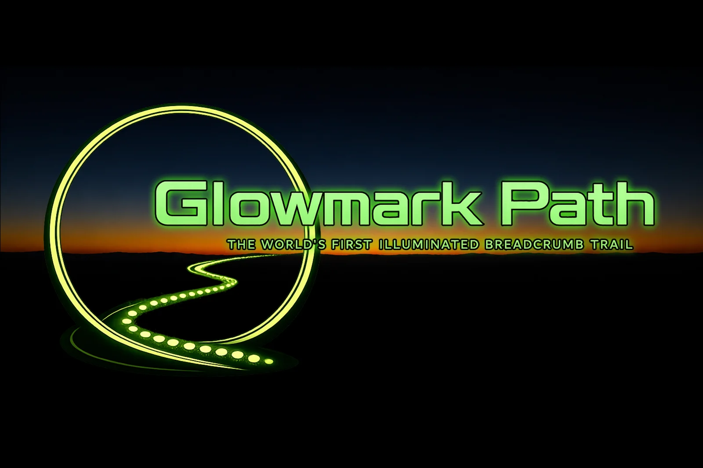
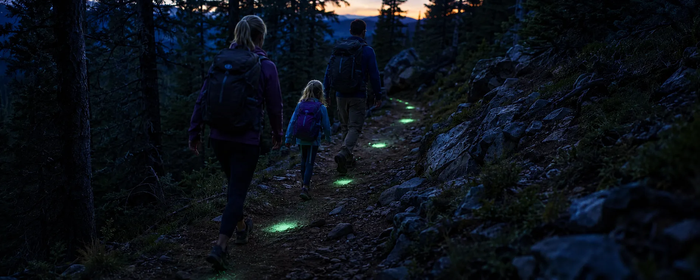
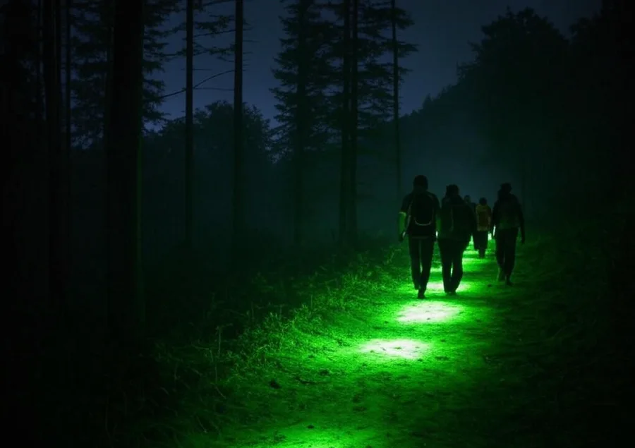
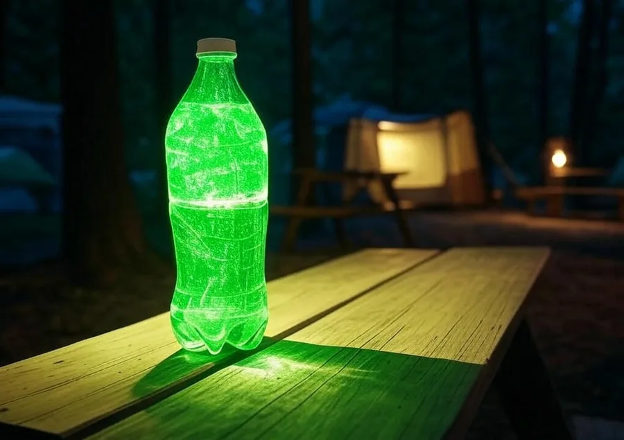
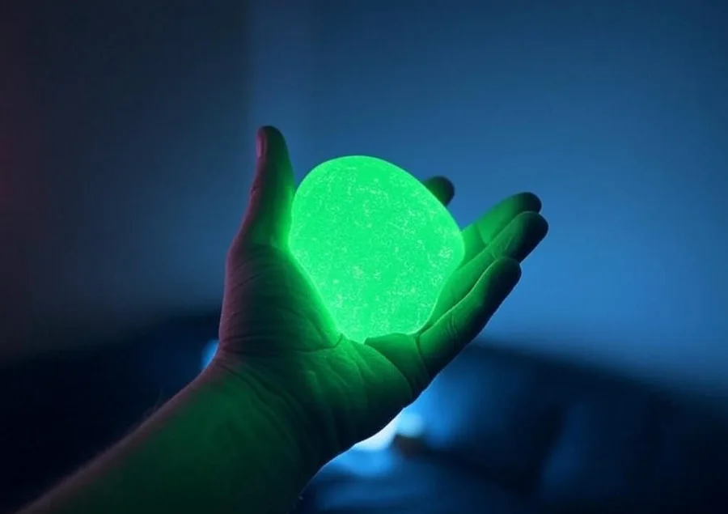
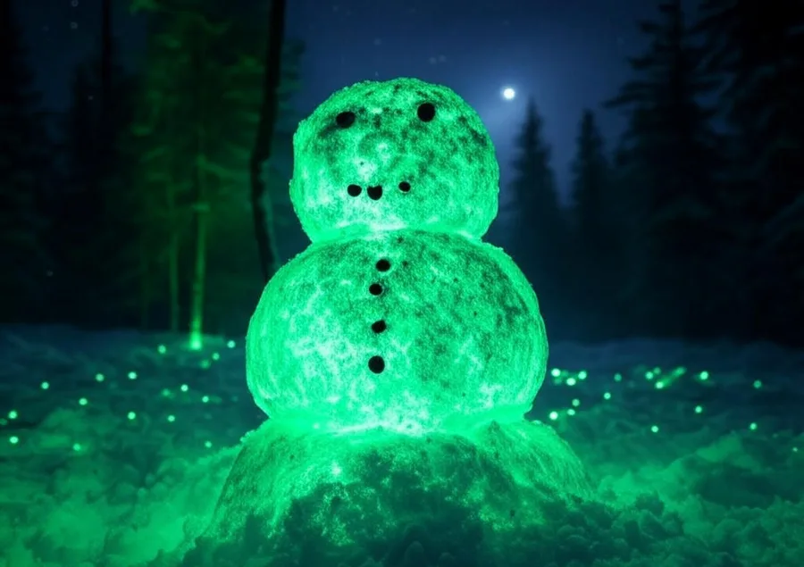

20 min
lights the ground

A biodegradable powder that leaves a trail of light back to camp. Charge it in daylight, scatter it at dusk, and follow it home hours later. No batteries. No flame. Nothing to carry out but the memory.
Tell me when it's ready
Anyone who has walked back to camp after dark knows the feeling — the trail that was obvious at six o'clock is gone at ten. Glow sticks mark one spot and become litter. Headlamps light a cone in front of you and leave everything behind you black. Reflective markers only work if something is already shining at them.
GlowMark Path leaves the route itself lit, behind you, all night — and then biodegrades.
It is a chemical reaction. It burns itself out, and then it is a piece of plastic you have to carry home.
Only as good as the cells inside it. When they die in the dark, you are exactly where you did not want to be.
Daylight recharges it. Use it tonight, leave it in the light tomorrow, use it again — for as long as the sun keeps coming up.
One of our lanterns has recharged and glowed every day for a year. Nothing has worn out.
Five minutes in full sun does it. So does a bright flashlight — intensity is what charges it, not time, so you are never waiting on the weather.
A coin-sized pile every five or six feet is enough to follow. One pouch marks roughly 400 ft of route — further if you place them well.
The markers stay visible all night, into sunrise — the walk out, the fishing hole, and the walk back.
Five minutes in full sun is enough — it is the brightness of the light that charges it, not the time spent under it. Then it does not fade on a timer: it halves, and halves again, each step lasting longer than the one before. That is why it can be genuinely bright for only twenty minutes and still be glowing twelve to sixteen hours later, long after sunrise.
Top-down, all four on the same scale. The 15 ft figure at full charge is measured from our own lanterns; the rest follow from it by inverse-square law, since light falls off with the square of distance. The pool shrinks through the night, but the job it does simply changes — a work light you read by, then a lantern you carry, then close work at arm’s length, and finally a marker you leave behind — the line to the outhouse at three in the morning. Long after it has stopped lighting the ground, you can still see it from well across a field.
Relative brightness at each stage, on a dark background.
Decay behaviour of strontium aluminate phosphors under DIN 67510, the industry test for glow materials. Shape is illustrative of the pigment class; our own charge-to-dawn figure comes from a year of use, not a lab.
A charged lantern lights a radius of roughly 10–15 ft around itself — enough to work by, find a zip, or see where you put your boots.
Still a light source, no longer a lamp. You can see it from across the campsite.
Now a marker rather than a light. This is the state it holds for most of the night.
Each halving takes longer than the last, so it never simply switches off. A full charge runs twelve to sixteen hours — longer than any night. Open your eyes at three in the morning and it is still clearly visible.
It lights an area for minutes. It stays visible for the whole night. Both are true, and most products only manage the first.
Images below illustrate intended uses. We're replacing them with photographs of the real product as we shoot them.

Trailheads, junctions, the path back to the tent, the way down to the water.

Stir a spoonful into a bottle of water and you have a light with no batteries and no flame. Fully charged it lights a radius of about 10–15 ft around itself. And it stays mixed — a year standing still, untouched, with no settling at the bottom.

Mixes into glowing slime and putty. Keeps small people busy and visible at the same time.

Snow, sand, chalk lines, backyard games. The glow works anywhere you can spread it.
GlowMark Path was formulated to be handed to a child, spread on the ground your dog walks over, and left to break down on its own. That was the design brief, not an afterthought.
Inert ingredients and nothing else — no solvents, no dyes, no preservatives, no fuel.
Made to be played with. Mix it into slime, roll it into snow, spread it with bare hands.
Your dog can walk through it, sniff it, and lie down in it.
Nothing in it harms soil, water, or the things living in them.
It breaks down where it falls. No plastic shell, no spent cartridge, no litter left behind.
Temporary by design. The trail fades and the ground is as you found it.
No batteries, no flame, no heat, nothing to switch on and nothing to burn out. The only thing it needs is daylight.
Non-toxic and biodegradable. No batteries, no flame, nothing to switch on — daylight is the only thing it needs. Blended in Montana.
Federal and state regulations prohibit leaving material in protected areas — including biodegradable material. Use GlowMark Path only where leaving temporary markings is permitted, follow all local, state and federal rules, and remove residue when you leave.
The formula is mixed and tested. What is left is production, packaging, and getting it into your hands. Leave an address and you will hear the day that happens.